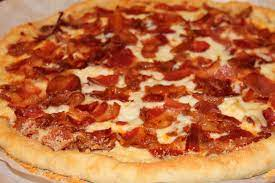

Description
Pizza is a dish of Italian origin consisting of a usually round, flat base of leavened wheat-based dough topped with tomatoes,
cheese, and often various other ingredients (such as anchovies, mushrooms, onions, olives, pineapple, meat, etc.),
which is then baked at a high temperature, traditionally in a wood-fired oven.[1] A small pizza is sometimes called a pizzetta.
A person who makes pizza is known as a pizzaiolo.
Ingredients
- 1 (12-to-15-inch) precooked pizza crust
- 1 tablespoon oil
- 2 medium onions, chopped
- 3 cloves garlic, minced
- 1 tablespoon flour
- 1/4 teaspoon paprika
- 1/8 teaspoon freshly ground black pepper
- 1/3 cup sour cream
- 1 teaspoon dried thyme leaves
- 1/2 teaspoon dried marjoram leaves
- 2 tablespoons Dijon mustard
- 1/2 to 1 pound bacon, cooked crisp, drained, pat-dried, and crumbled
- 1 1/2 cups shredded cheddar cheese
- 1 cup shredded mozzarella cheese, or Muenster cheese
- 1/4 cup grated Parmesan cheese
Steps
- Gather the ingredients
- Preheat oven to 425 F. If using uncooked dough, shape on a baking sheet and bake for about 5 to 7 minutes once the oven is hot. Remove from oven and reserve. If using a prebaked crust, there's no need to bake before adding toppings.
- Heat the oil in a large skillet and sauté onions and garlic until tender, about 6 to 7 minutes.
- Add the flour, paprika, and pepper and cook, stirring, for 3 minutes.
- Add the sour cream, thyme, and marjoram leaves and cook until thickened, about 1 to 2 minutes longer. Stir in the mustard.
- Spread the sauce over the prebaked crust.
- Top with the bacon and cheeses.
- Bake for 9 to 15 minutes, or until the crust is golden brown on the sides, crisp at the bottom, and the cheeses are melted.
- Cut into your preferred shape and serve.
- Enjoy!
Return to the top
Return to main page